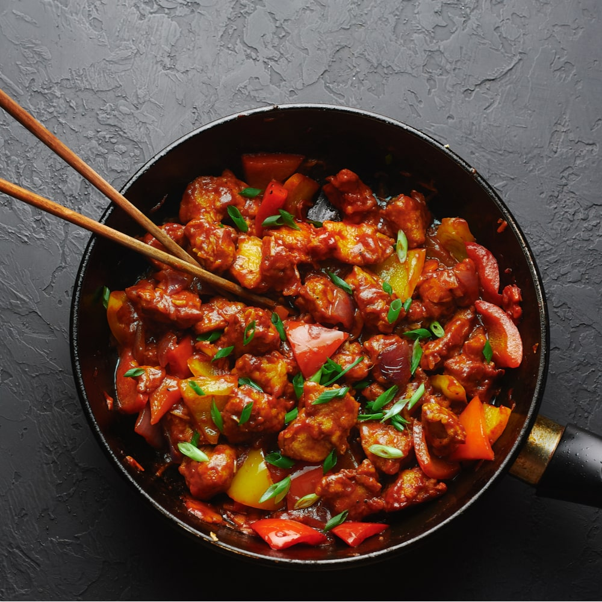

Make your Fevorite Food by your Own
Search of best Recipes ends here
Best of Ours

Butter Chicken
BUtter chicken is most femous chiakn dish. you can make deliciuos and spicy chicken dish using this recipe
View Recipe

Chicken Chilli
BUtter chicken is most femous chiakn dish. you can make deliciuos and spicy chicken dish using this recipe
View Recipe
Chicken Masala
BUtter chicken is most femous chiakn dish. you can make deliciuos and spicy chicken dish using this recipe
View Recipe
Chicken Biryani
BUtter chicken is most femous chiakn dish. you can make deliciuos and spicy chicken dish using this recipe
View Recipe